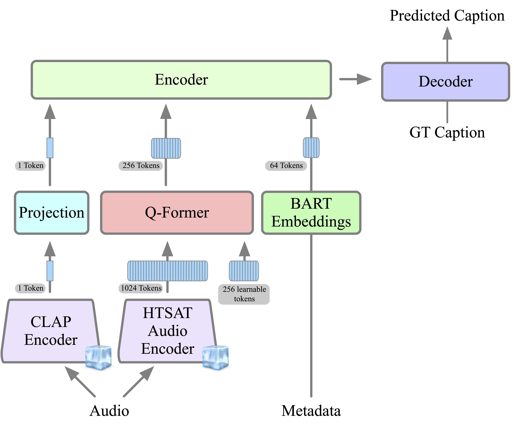
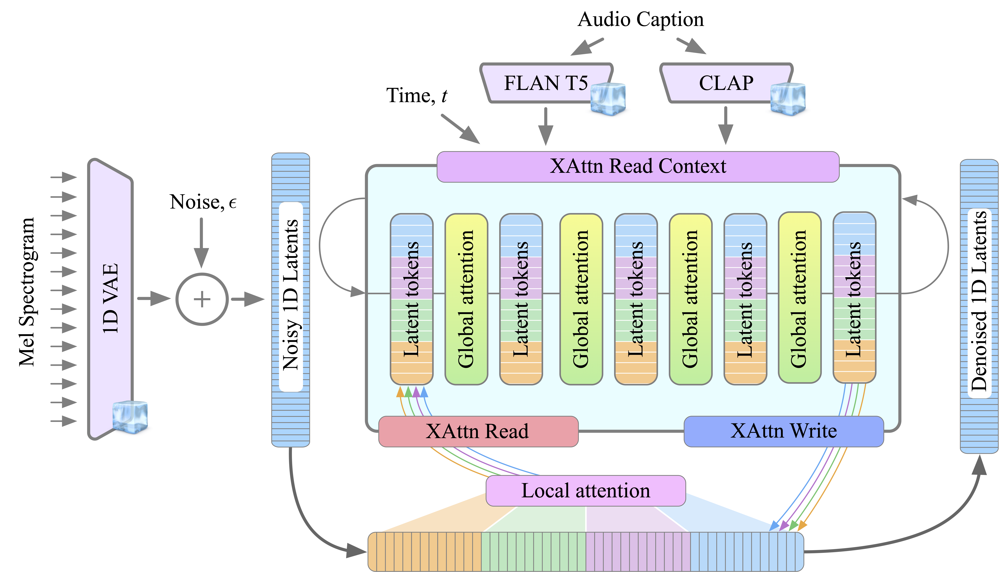
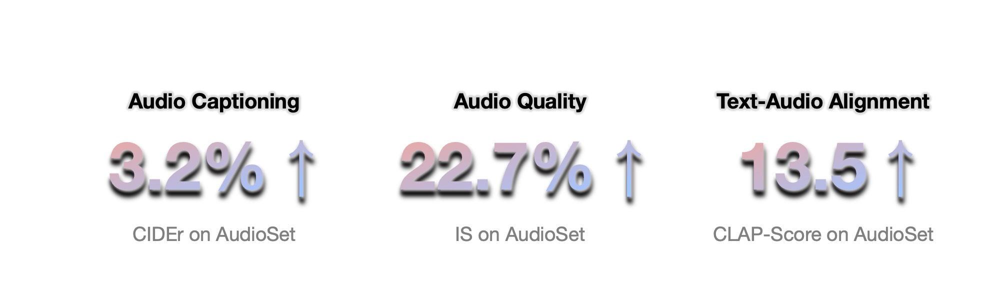

Click anywhere on the page, then hover over (or click) the waveforms to listen to the generated sound through our audio generator GenAU .
A man speaks followed by a toilet flush
A chainsaw cutting as wood is cracking
A crowd murmurs as a siren blares and then stops at a distance
A vehicle engine revving then accelerating at a high rate as a metal surface is whipped followed by tires skidding
A mid-size motor vehicle engine accelerates and is accompanied by hissing and spinning tires, then it decelerates and an adult male begins to speak
A muffled man talking as a goat baas before and after two goats baaing in the distance while wind blows into a microphone
A cat meows and hisses
Fireworks pop and explode
A small child and woman speak with splashing water
Horses growl and clop hooves
A gunshot firing in the distance followed by steam hissing and fire crackling
A woman speaks with chirping frogs and distant music playing
Large church bells ring as rain falls on a hard surface and wind blows lightly into a microphone
A dog barking as a man is talking while wind blows into a microphone as birds chirp in the distance
A vehicle driving by while splashing water as a stream of water trickles and flows followed by a thunder roaring in the distance while wind blows into a microphone
AutoCap
Click anywhere on the page, then hover over (or click) the waveforms to listen to audio and examine the captions generated through our audio captioner AutoCap .
A man speaks as wind blows and water
splashes
A train moves getting closer and a horn is triggered
Dishes are being moved and a woman laughs and speaks
A child speaks followed by a loud crash and a scream
A baby laughs and splashes, and an adult female speaks
Birds chirp in the distance, and then a dog barks nearby
Some light rustling followed by a clank then water pouring
Birds chirp in the distance, followed by a man speaking nearby, after which insects buzz nearby
A telephone dialing followed by a series of plastic clicking then plastic clanking before plastic thumps on a surface
AutoReCap
Click anywhere on the page, then hover over (or click) the video to listen to examine samples from our proposed dataset AutoReCap .
A series of gunshots firing followed by a man screaming and a woman screaming
Water is splashing and birds are chirping
A door is being opened and closed
A crowd of people applauding and cheering
Someone is rubbing a surface
A motor vehicle engine is running and vibrating, and rhythmic clacking is present
Someone is chewing
Metal is being moved on a surface
A helicopter engine is running
A small motor is running
A hammer is being used on a surface
A power tool is being used
Abstract
Generating ambient sounds is a challenging task due to data scarcity and often
insufficient caption quality, making it difficult to employ large-scale generative
models for the task. In this work, we tackle this problem by introducing two
new models. First, we propose AutoCap , a high-quality and efficient automatic
audio captioning model. By using a compact audio representation and leveraging
audio metadata, AutoCap substantially enhances caption quality, reaching a CIDEr
score of 83.2, marking a 3.2% improvement from the best available captioning
model at four times faster inference speed. Second, we propose GenAu, a scalable
transformer-based audio generation architecture that we scale up to 1.25B parameters. Using AutoCap to generate caption clips from existing audio datasets, we
demonstrate the benefits of data scaling with synthetic captions as well as model
size scaling. When compared to state-of-the-art audio generators trained at similar
size and data scale, GenAu obtains significant improvements of 4.7% in FAD
score, 22.7% in IS, and 13.5% in CLAP score, indicating significantly improved
quality of generated audio compared to previous works. Moreover, we propose an
efficient and scalable pipeline for collecting audio datasets, enabling us to compile
57M ambient audio clips, forming AutoReCap-XL, the largest available audio-text
dataset, at 90 times the scale of existing ones. Our code, model checkpoints, and
dataset are publicly available
Our Models

AutoCap: We employ frozen CLAP and HTSAT audio encoders to produce the
audio representation. We then compact this representation into 4x less tokens using a
Q-Former module. This enhances the efficieny
of the captioning model and aligning the audio representation with the language
representation of a pretrained BART encoder-decoder model that aggregates these tokens along
with tokens extected from useful metadata to produce the output caption.

GenAu: We use a frozen audio 1D-VAE to produce a sequence of latents from a
Mel-Spectrogram representation. Based on the FIT architecture, these latents are patchified
and divided into groups which processed by local attention
layers. The read and write
operations are implemented as cross attention layers that transfer information between input
latents and learnable latent tokens.
Finally, global attention layers process latent tokens with
attention spanning over all groups of latent tokens, enabling global communication.
Improvements

AutoReCap Collection Pipeline
AutoReCap: We propose an efficient and scalable pipeline for collecting audio datasets, enabling us to compile 57M ambient audio clips, forming AutoReCap-XL, the largest available audio-text dataset, at 90 times the scale of existing ones. Our data data collection approach
leverages existing automatic video transcription to identify segments with ambient sounds. We then use our proposed captioning method AutoCap to caption the identified segments and exclude speech and music audio clips based on keyword search.
Please refer to the Dataset page for more samples and GitHub page for instructions on downloading the dataset!
Bibtex: @article{haji2024taming,
title={Taming Data and Transformers for Audio Generation},
author={Haji-Ali, Moayed and Menapace, Willi and Siarohin, Aliaksandr and Balakrishnan, Guha and Ordonez, Vicente},
journal={arXiv preprint arXiv:2406.19388}
year={2024},
}
License Agreement
These sample code, data, and model checkpoints are made available by Snap Inc. for non-commercial, research purposes only. Non-commercial means not primarily intended for or directed towards commercial advantage or monetary compensation. Research purposes mean solely for study, instruction, or non-commercial research, testing or validation.
No commercial license, whether implied or otherwise, is granted in or to this code, unless you have entered into a separate agreement with Snap Inc. for such rights.
These sample code, data, and model checkpoints are provided as-is, without warranty of any kind, express or implied, including any warranties of merchantability, title, fitness for a particular purpose, non-infringement, or that the code is free of defects, errors, or viruses. In no event will Snap Inc. be liable for any damages or losses of any kind arising from this sample code or your use thereof.
Any redistribution of this sample code, including in binary form, must retain or reproduce the above copyright notice, conditions, and disclaimer.
 Snap Research
Snap Research